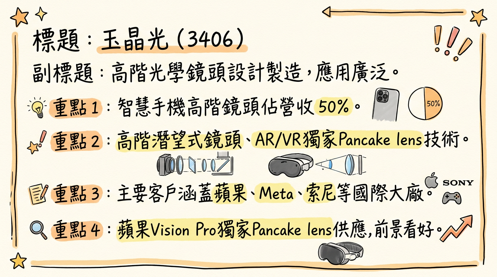
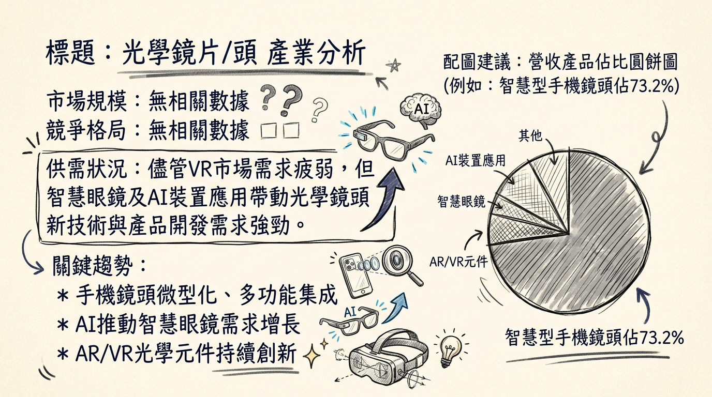

玉晶光受惠於蘋果AI手機換機潮與AR/VR新應用放量，儘管短期營收受季節性因素影響，長期在高階鏡頭技術領先與產能擴充的雙重驅動下，營收與獲利成長動能強勁，建議投資人積極關注其高階產品良率提升及新產能投放進度。
玉晶光電（3406）是一家專業的光學鏡頭設計與製造商，核心產品與服務集中在光學鏡頭及相關光學元件，應用領域廣泛，主要涵蓋智慧型手機、AR/VR裝置及AI智慧裝置。
核心產品與應用領域：| 產品項目 | 營收佔比 |
|---|---|
| 10M（含）以上及TOF鏡頭 | 50% |
| 10M 以下鏡頭 | 10% |
| 其他產品（稜鏡模組、AR/VR、光學元件、閃光燈鏡頭等） | 40% |
| 月份 | 金額 (新台幣億元) | 月增率 MoM | 年增率 YoY |
|---|---|---|---|
| 2026年02月 | 14.61 | -41.89% | +5.14% |
| 2026年01月 | 25.15 | -4.37% | +23.37% |
| 2025年12月 | 26.3 | +15.92% | +81.5% |
| 2025年11月 | 22.69 | +0.53% | +11.64% |
| 2025年10月 | 22.57 | -15.07% | +14.3% |
| 2025年09月 | 26.57 | -1.58% | +2.74% |
| 項目 | 2025年第三季 | 2025年第二季 | 2025年第一季 | 2024年第四季 | 2024年第三季 | 2024年第二季 | 2024年第一季 |
|---|---|---|---|---|---|---|---|
| 合併營收 (億元) | 77.4 | 47.78 | 52.82 | 64.12 | 75.8 | 43.0 | 48.9 |
| 季增率 | +62% | -9.62% | -17.65% | +21.32% | +76.28% | -11.9% | N/A |
| 年增率 | +3% | +11.12% | +7.97% | +12.3% | +15.5% | -12.9% | +2.3% |
| 毛利率 | 34.1% | 29.07% | 30.93% | 27.11% | 37.44% | 37.01% | 35.74% |
| 營業利益 (億元) | 18.1 | 5.96 | 8.9 | 6.98 | 20.08 | 9.1 | 10.49 |
| 營業利益率 | 23.43% | 12.48% | 16.85% | 10.89% | 26.45% | 21.15% | 21.44% |
| 稅後淨利 (億元) | 14.17 | 2.41 | 8.63 | 10.08 | 14.19 | 8.69 | 10.19 |
| 稅後淨利率 | 18.31% | 5.05% | 16.35% | 15.72% | 18.39% | 20.23% | 20.84% |
| EPS (新台幣元) | 12.54 | 2.13 | 7.64 | 8.92 | 12.55 | 7.68 | 9.0 |
| 項目 | 2024年 (實際) | 2025年 (實際/預估) |
|---|---|---|
| 全年營收 (億元) | 231.83 | 249.87 |
| 年增率 | +6.96% | +7.78% |
| EPS (新台幣元) | 38.35 | 31.65 (FactSet中位數, 2026/01/07) / 29.81 (統一證券, 2025/11/20) |
| 券商名稱 | 目標價 (新台幣) | 評等 | 報告日期 |
|---|---|---|---|
| FactSet (中位數) | 496 | N/A | 2026/01/07 |
| 統一證券 | 500 | 中立 | 2025/11/20 |
| FactSet (中位數) | 525 | N/A | 2025/11/12 |
| 摩根大通證券 | 470 | 優於大盤 | 2025/08/15 |
| 年度 | 券商名稱 | EPS預估 (新台幣元) | 報告日期 |
|---|---|---|---|
| 2025 | FactSet (中位數) | 31.65 | 2026/01/07 |
| 2025 | 統一證券 | 29.81 | 2025/11/20 |
| 2026 | FactSet (中位數) | 39.23 | 2026/01/07 |
| 季度 | 毛利率 | 營業利益率 | 稅後淨利率 |
|---|---|---|---|
| 2025Q3 | 34.12% | 23.43% | 18.31% |
| 2025Q2 | 29.07% | 12.48% | 5.05% |
| 2025Q1 | 30.93% | 16.85% | 16.35% |
| 2024Q4 | 27.11% | 10.89% | 15.72% |
| 2024Q3 | 37.44% | 26.45% | 18.39% |
| 2024Q2 | 37.01% | 21.15% | 20.23% |
| 2024Q1 | 35.74% | 21.44% | 20.84% |
玉晶光2025年第二季獲利及利潤率受到匯兌損失及產品組合影響而顯著下滑，但第三季隨營收回升及產品組合改善，毛利率、營業利益率及稅後淨利率均大幅提升。公司透過導入AI智慧工廠及良率提升，目標降低成本與提升效率，有助於未來維持穩定的利潤表現。
| 季度 | 存貨週轉天數 | 應收帳款週轉天數 |
|---|---|---|
| 2025Q3 | 34.53 天 | 56.38 天 |
| 2025Q2 | 51.14 天 | 66.80 天 |
| 2025Q1 | 50.40 天 | 64.47 天 |
| 2024Q4 | 57.35 天 | 80.61 天 |
| 年度 (發放年度) | 現金股利 (新台幣元/股) | 除權息日 | 現金發放日 |
|---|---|---|---|
| 2025 (2024年度) | 18 | 2025/07/16 | 2025/08/15 |
| 2024 (2023年度) | 12 | 2024/07/18 | 2024/08/16 |
| 2023 (2022年度) | 12 | 2023/07/27 | N/A |
| 類型 | 累積買賣超金額 (新台幣) | 持股比例 |
|---|---|---|
| 外資 | +23.4億元 | 34.04% |
| 投信 | -9.02億元 | N/A |
| 自營商 | -6,975萬元 | N/A |
| 產業細分 | 2024年市場規模 (預估) | 2030/2035年預估規模 | CAGR (2024-2030/2035) | 備註 |
|---|---|---|---|---|
| 手機鏡頭 | 48億美元 | 72億美元 (2030) | 7.1% | 智慧型手機鏡頭佔比最高 |
| AR/VR鏡頭 | - | 26.2億美元 (2035) | 14.7% (2026-2035) | 2026年為7.9億美元 |
| AR智慧眼鏡市場 | - | 99.8億美元 (2030) | 59% (2025-2030) | 2025年為9.8億美元 |
| AR/VR智慧眼鏡 | 211.7億美元 (2025) | 469.3億美元 (2030) | 17.2% (2025-2030) | 2026年為248.8億美元 |
| 光學鏡頭 (整體) | - | 442.8億美元 (2034) | 6.70% (2026-2034) | 2025年210.8億美元 |
未找到光學鏡頭產業的具體平均毛利率水準的最新公開數據。玉晶光在2024年第二季預估單季毛利率為36.3%，預估第三季將提升至37.6%，顯示其在高階產品策略下的良好毛利率表現。
| 排名 | 公司名稱 | 2020年出貨市佔率 | 主要特點 |
|---|---|---|---|
| 1 | 舜宇光學 | 30.21% | 積極擴產，提升高階產品比重 |
| 2 | 大立光 | 28.59% | 技術領先者，擴展VCM和車用鏡頭 |
| 3 | 瑞聲科技 | 9.87% | 提高高階產品比重，開發WLG鏡頭 |
| 4 | 玉晶光 | 7.20% | 營收增長快速，積極投入AR/VR鏡頭 |
| 5 | Kantatsu | - | iPhone鏡頭供應鏈之一，但已退出新款iPhone供應鏈 |
| 排名 | 公司名稱 | 2025年Q1市佔率 |
|---|---|---|
| 1 | Meta | 50.8% |
| 2 | XREAL | 12.1% |
| 3 | ByteDance | 9.4% |
| 4 | Viture | 6.2% |
| 5 | TCL | 4.2% |
| 比較項目 | 玉晶光 (3406) | 大立光 (3008) |
|---|---|---|
| 技術 | 積極開發高倍潛望式鏡頭(最高16倍)、可變光圈、塑膠棱鏡、超微小鏡頭。蘋果Vision Pro Pancake lens獨家供應商。 | 智慧型手機鏡頭技術領先者，玻塑混合鏡頭量產能力強，高階鏡頭技術具優勢。 |
| 產能 | 產能利用率緊繃，導入AI智慧工廠，評估海外擴廠。 | 台中新廠產能開出，玻塑混合鏡頭與舜宇競爭激烈。 |
| 客戶 | 蘋果iPhone主力供應商，AR/VR客戶涵蓋蘋果、Meta、索尼。 | 蘋果iPhone主力供應商，亦有其他安卓品牌客戶。 |
| 價格 | 透過提升高階產品比重，提升ASP與毛利率。 | 高階鏡頭產品ASP與毛利率通常較高。 |
| 公司名稱 | 營收規模 | 毛利率表現 | EPS表現 |
|---|---|---|---|
| 玉晶光 | 2025年全年營收249.87億元（年增7.78%）。AR/VR佔比成長。 | 2024Q3高點37.44%，2025Q2低點29.07%，2025Q3回升至34.1%。 | 2024年EPS 38.35元，2025年預估約31.65元。 |
| 大立光 | 傳統手機鏡頭龍頭，營收規模通常大於玉晶光。 | 長期毛利率維持高檔，領先業界。 | 歷史EPS表現優異，通常高於玉晶光。 |
* 趨勢： AI技術已成為智慧型手機相機模組升級與智慧眼鏡發展的核心驅動力。光學鏡頭作為AI數據採集的第一道關卡，其性能直接影響後端AI判讀準確度。
* 具體影響：
* 手機鏡頭： AI將推動高畫素、可變光圈、潛望式鏡頭等技術發展，優化成像品質。iPhone 16導入AI功能預計引發換機潮。
* AR/VR/智慧眼鏡： AI整合加速智慧眼鏡普及，成為下一個AI載具。提供沉浸式和多元化體驗，如眼動追蹤。
* 趨勢： 消費者對高品質手機攝影需求不減，推動高畫素、大光圈、長焦距鏡頭發展。AR/VR裝置則追求輕薄、高解析度、廣視角。
* 具體影響：
* 手機鏡頭： 2026年手機攝影將出現外掛鏡頭、2億畫素普及、AI標配。可變光圈與潛望式鏡頭倍率提升（從8倍至10-16倍）增加製造難度，提升技術要求。
* AR/VR裝置： OLEDoS和LEDoS顯示技術成高階VR/MR首選。AR眼鏡輕量化、長續航力。混合實境（MR）與延展實境（ER）將成主流。
* 趨勢： 玻塑混合鏡頭在手機領域全面普及。車載、安防、工業自動化與AR/VR等新興領域成為鏡頭需求新引擎。
* 具體影響：
* 玻塑混合鏡頭： 提升手機成像品質，有利掌握技術的光學廠商。
* 車載鏡頭： 智慧駕駛技術推動車載鏡頭需求，2025年全球需求量預計增至4.4億顆（年增17.6%）。其高附加值將推動光學鏡頭市場產值增長。玉晶光亦將車用納入終端應用。
* AR/VR/智慧眼鏡市場高速成長： AR智慧眼鏡市場2025-2030年複合成長率高達59%。玉晶光為蘋果Vision Pro Pancake lens獨家供應商，並與Meta、索尼等合作，具領先優勢，有望搭上市場爆發成長。
* 高階技術導入提升ASP： 2024年首度出貨潛望式鏡頭產品（預估營收貢獻15億元），並持續開發更高倍率潛望式及可變光圈鏡頭，有助於提升產品ASP和毛利率。
* AI智慧裝置應用擴大： 產品應用擴及筆記型電腦及各類AI智慧裝置，有望拓展新的成長空間。
* 競爭激烈： 手機鏡頭市場成熟，尤其在高階潛望式鏡頭領域，大立光仍具競爭優勢。
* VR市場需求疲軟： 儘管AR市場強勁，但短期VR市場的低迷可能影響部分營收。
* 新技術導入的不確定性： 可變光圈鏡頭、高倍率潛望式鏡頭等新技術的開發與客戶認證存在時程與良率挑戰。
* 總經風險： 匯率波動（儘管有自然避險策略）及地緣政治變化可能對產能部署造成間接影響。
* AI智慧眼鏡/AR/VR： AI是智慧眼鏡成為下一個個人運算平台的核心動力。玉晶光積極布局AI智慧眼鏡，並供應蘋果Vision Pro Pancake lens，直接受惠於AI在AR/VR裝置上的應用普及和市場成長。
* AI裝置/機器人： 玉晶光產品應用擴及AI智慧裝置和人形機器人領域（已送樣），未來有望成為新成長動能。
| 時間點 | 成長動能項目 | 具體事件與說明 |
|---|---|---|
| 2024年6月 | 新市場 | 蘋果Vision Pro拓展至中國、日本等8個新市場。 |
| 2024年下半年 | 需求 | iPhone 16導入AI功能，預期下半年銷售量突破9000萬台，引發換機潮。 |
| 2025年6月17日 | 新客戶/新市場 | 人形機器人已送樣中。AI智慧眼鏡為最大出貨廠商。 |
| 2025年11月19日 | 新技術/產能 | 潛望式鏡頭開發更高倍數（10-16倍）。導入AI智慧工廠，目標效率與良率每年提升15%。產能利用率偏緊。 |
| 2026年1月8日 | 新客戶/新市場 | 積極切入CPO（共同封裝光學）新領域商機。 |
| 2026年2月12日 | 擴廠/資本支出增加 | 子公司斥資新台幣18.6億元購置機器設備，2026年集團資本支出預計超過20億元，用於手機及VR鏡頭生產。 |
| 2026年上半年 | 需求 | 公司預期營運將優於去年同期。 |
| 2026年下半年 | 新產品 | 新產品進度順利進行中。手機鏡頭新技術（可變光圈、塑膠棱鏡、超微小鏡頭）預計導入客戶產品。 |
| 2026年全年 | 整體展望 | 公司預期營收與獲利表現可望優於2025年，iPhone AI換機潮達高峰。 |
| 長期 | 新客戶/新市場 | AI賦能智慧眼鏡需求強勁，視為下一個個人運算平台。 |
| 長期 | 新客戶/新市場 | AI智慧裝置與機器人領域新機會。 |
| 長期 | 擴廠 | 評估東南亞海外擴廠可能性。 |
玉晶光在2026年面臨AI手機換機潮與AR/VR市場爆發的雙重成長機遇。憑藉其在高階手機鏡頭的技術領先與蘋果Vision Pro獨家供應商的地位，成長前景明確。
綜合考量券商目標價區間（新台幣470元至525元）及公司營運展望，建議投資人對玉晶光維持「區間操作」策略，目標價區間設定為新台幣520元至580元，等待高階產品出貨放量與AR/VR營收貢獻提升的催化。
本報告由 AI 自動產生，資料來源為公開網路資訊，僅供參考，不構成投資建議。產生時間：2026-03-09 22:05

